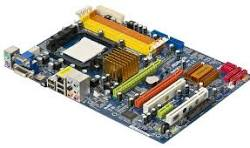
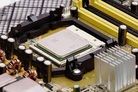
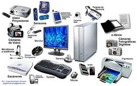
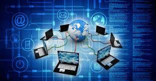

Componentes Físicos que integran un equipo de computo:
-Tarjeta principal o placa base -Microprocesadores
-equipos periféricos -Redes de computadoras
También se conoce como tarjeta madre (motherboard); ser localiza dentro del gabinete y contiene los componentes esenciales de la computadora:

Microprocesador

Chip: Circiuito integrado dentro de una pastilla de silicio o de algún otro material semiconductor.
Equipos periféricos

Redes de computadoras

Dispocitivos: Componentes de la computadora capaces de enviar o recibir información.
Programas: Conjunto de instrucciones que realizan una tarea específica.
Los equipos periféricos son dispositivos que permiten al usuario introducir datos a la computadora y recibir información desde la CPU. Conectan el procesador con el mundo exterior. Algunos periféricos son:
Una red computadoras es un conjunto de computadoras conexctadas entre sí con la finalidad de compartir datos, recursos y servicios. Según el área que abarca se clasifican como: